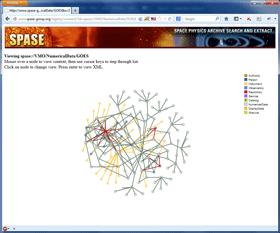

Introduction
The SPASE Registry Server is a web application written in Java which provides resolver, search, render and download services for SPASE XML resource descriptions. It can also chain to other registry servers and aggregate all results, returning all matches in a self-organized network of registry servers.

The Registry Framework is depicted in the figure to the right. The metadata which is accessible from the services is stored in the local file system. It can be managed by a revision control system such as "git". There may also be some process that synchronizes the local instances of the metadata. This is external and independent of the registry services.
The registry services access registered metadata to fulfill requests. For example, the "status" service reports on the contents of the metadata repository. The "resolver" locates a resource description that matches a given resource ID. Other services rely on the "resolver" service to fulfil requests. These include "downloader" which retrieves data described by a resource description, "render" which prepares a resource description stored as XML for viewing in a web browser, and "explorer" which allows tree based navigation of the metadata respository.
The complete list of available services includes:
Most services can also be run from the command-line.
Installation
The Registry Server is packaged as a Web Application which can be installed on an application server such as Tomcat. The steps are:
- Download spase-registry-1.2.8.war
- Place the "war" file in the web apps folder on your server
Configuration
The resolver service locates resource descriptions by mapping the "authority" portion of a Resource ID to a location in the local files system, then using the path portion of the resource ID to locate the resource description. The "collator" tool in the Resource Tools can be used to organize a collection of resource descriptions consistent with the requirements for the resolver service.
The authorities known to the services are set in the the "authority.conf" file located in the WEB-INF/conf folder. Each line in an "authority.conf" maps an authority name to a local file system path to the metadata. The format is "authority name <Tab> path". A path that begins with a "." is relative to the installation of the registry server. Lines beginning with a "#" are considered comments and ignored.
An "authority.conf" looks something like:
# Authority name path list # Maps authority names to local paths # Relative paths begin with a dot (.) and # are relative to the service instance (root of webapp) Example ./metadata/Example
Documentation
Services
Individual services in the Registry Services Package.
Resolver
The resolver service is the central service for the Registry Server. All other services, with the exception of search call the resolver service to obtain metadata.
A detail description of each service follows:
Download
Obtains a list of URLs associated with a resource by querying a registry
server, then downloads and packages all the source files. The collection
of files is packaged into a zip file and written to the output stream.
Example:
- Granule Lists:
- All granules: download?id=spase://Example/NumericalData/Geotail/LEP/EDA.PT12S
- Granules for August 2004: download?id=spase://Example/NumericalData/Geotail/LEP/EDA.PT12S&b=2004-08-01&e=2004-08-31
Registry Explorer
|
A graphical tree based interface to the registries.
The application calls the "resolver" service to populate and navigate through the tree. |

|
Connection Map
|
A graphical map of connections (associations) between resource descriptions.
|  |
Render
Render a resource using a stylesheet.
Example:
- Render:
- Just resource: render?id=spase://Example/NumericalData/Geotail/LEP/EDA.PT12S
- Full (recursive): render?id=spase://Example/NumericalData/Geotail/LEP/EDA.PT12S&f=yes
Resolver
Resolver retrieves a resource description for a given resource ID or generates a list
of resources at a given partial resource ID location.
Example:
- Help: resolver?h=yes
- Tree: resolver?i=spase://Example/NumericalData&t=yes
- Resource Description:
- Just resource: resolver?id=spase://Example/NumericalData/Geotail/LEP/EDA.PT12S
- Full (recursive): resolver?id=spase://Example/NumericalData/Geotail/LEP/EDA.PT12S&r=yes
- Granule:
- All: resolver?id=spase://Example/NumericalData/Geotail/LEP/EDA.PT12S&g=yes
- All (URL): resolver?id=spase://Example/NumericalData/Geotail/LEP/EDA.PT12S&u=yes
- All (size): resolver?id=spase://Example/NumericalData/Geotail/LEP/EDA.PT12S&s=yes
- For August 2004: resolver?id=spase://Example/NumericalData/Geotail/LEP/EDA.PT12S&g=yes&b=2004-08-01&e=2004-08-31
- For August 2004 (URL): resolver?id=spase://Example/NumericalData/Geotail/LEP/EDA.PT12S&g=yes&b=2004-08-01&e=2004-08-31&u=yes
- For August 2004 (size): resolver?id=spase://Example/NumericalData/Geotail/LEP/EDA.PT12S&g=yes&b=2004-08-01&e=2004-08-31&s=yes
- For August 2004 (with parent): resolver?id=spase://Example/NumericalData/Geotail/LEP/EDA.PT12S&g=yes&r=yes&b=2004-08-01&e=2004-08-31
Search
Scan a registry for resources containing one or more words.
Example:
- Help: search?h=yes
- Render:
- Geotail related: search?words=Geotail
Status
Status retrieves information about a registry.
Example:
- Help: status?h=yes
- Inventory:
- Resource Class (1): status?a=Example&i=1
- Observatory (2): status?a=Example&i=2
- Instrument (3): status?a=Example&i=3
- Updated:
- In last 30 days
- Summary: status?a=Example&u=yes&b=30+days
- Details: status?a=Example&u=yes&d=yes&b=30+days
- Since 2009-01-01
- Summary: status?a=Example&u=yes&b=2009-01-01
- Details: status?a=Example&u=yes&d=yes&b=2009-01-01
- In last 30 days
Command-line Examples:
- Example 1